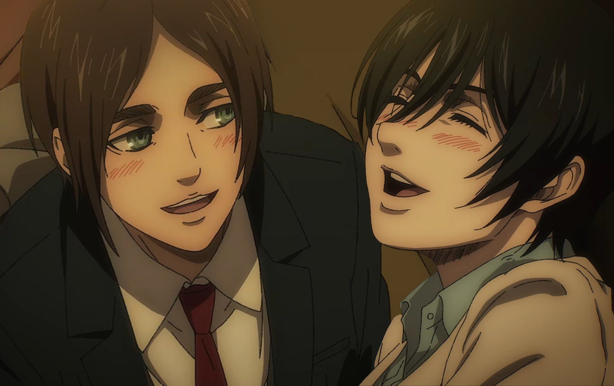

Star crossed love
🌌 Star-Crossed Love: When Love is Doomed by Fate
The phrase “star-crossed love” comes from old beliefs in astrology. In the past, people thought that the stars guided human destiny. If two people’s stars were not aligned, it meant that no matter how strong their love was, their relationship would face misfortune or end in tragedy.The term itself was made famous by William Shakespeare in Romeo and Juliet, where the young lovers are described as “a pair of star-crossed lovers.”
Star-crossed love is not about the absence of love. In fact, it often involves a deep, undeniable connection between two people. What makes it tragic is that circumstances—whether family, society, duty, or fate itself—stand in the way of their happiness. Their story usually shows us how powerful love can be, but also how powerless it may feel against destiny.
example
Romeo and Juliet: The Classic Example

Romeo and Juliet are perhaps the most iconic star-crossed lovers in history. They fall in love at first sight, but their families are sworn enemies. Despite their passion and determination, every step they take to be together only pushes them closer to tragedy. In the end, their love does not die because it was weak, but because the world around them refused to allow it. Their story is a reminder that love can be pure and strong, yet still be destroyed by hatred and circumstance.
Eren and Mikasa: A Modern Star-Crossed Love
In modern storytelling, we see similar themes in Eren Yeager and Mikasa Ackerman from Attack on Titan. From childhood, Mikasa’s love for Eren is unwavering. She protects him, stands by him, and silently hopes for a future together. Eren, however, is consumed by a greater mission—the freedom of his people. His path turns him into a figure opposed by the entire world
Although their bond is undeniable, they are torn apart by Eren’s choices and the cruel flow of destiny. Mikasa’s love does not fade, but it cannot change the inevitable. In the end, her love is proven through sacrifice, not union. Their story is deeply painful, showing that even when two people are bound by love, fate can still keep them apart
Why Star-Crossed Love Matters
Stories of star-crossed lovers continue to move us because they reflect the fragility of human desires. They remind us that love is not always about happy endings—it can also be about courage, sacrifice, and the beauty of moments shared, even if short-lived. Whether it is in the timeless tragedy of Romeo and Juliet or the modern epic of Eren and Mikasa, star-crossed love speaks to a universal truth: sometimes, the heart wants what the stars will never allow
| title | Romeo and Juliet |
|---|---|
| writer/story maker | William Shakespeare |
| genre | romance and drama |
| details | get make 1596 and first published in 1597. |
| title | Attack on titan |
|---|---|
| writer/story maker | Hajime Isayama |
| genre | action,drama |
| details | Attack on Titan officially started in September 2009, when the manga was first published in Bessatsu Shōnen Magazine |